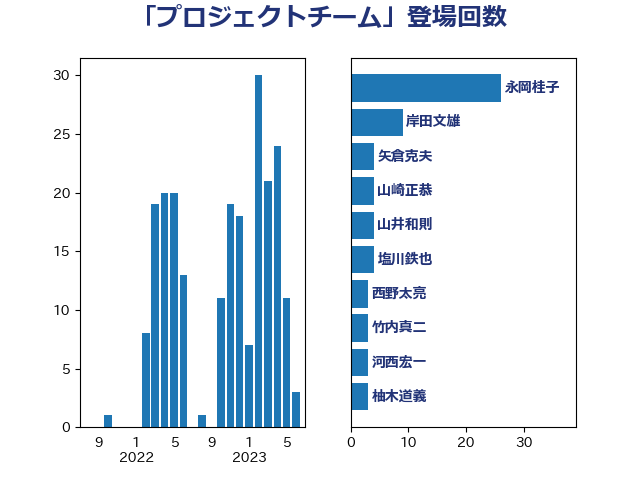

単語「プロジェクトチーム」

| 永岡桂子 | 自由民主党 | 26 回 |
| 岸田文雄 | 自由民主党 | 9 回 |
| 矢倉克夫 | 公明党 | 4 回 |
| 山崎正恭 | 公明党 | 4 回 |
| 山井和則 | 立憲民主党 | 4 回 |
| 塩川鉄也 | 日本共産党 | 4 回 |
| 西野太亮 | 自由民主党 | 3 回 |
| 竹内真二 | 公明党 | 3 回 |
| 河西宏一 | 公明党 | 3 回 |
| 柚木道義 | 立憲民主党 | 3 回 |
| 末松信介 | 自由民主党 | 3 回 |
| 後藤茂之 | 自由民主党 | 3 回 |
| 守島正 | 日本維新の会 | 3 回 |
| 大口善徳 | 公明党 | 3 回 |
| 塩崎彰久 | 自由民主党 | 3 回 |
| 國重徹 | 公明党 | 3 回 |
| 野田聖子 | 自由民主党 | 2 回 |
| 赤澤亮正 | 自由民主党 | 2 回 |
| 谷公一 | 自由民主党 | 2 回 |
| 菊田真紀子 | 立憲民主党 | 2 回 |
| 自見はなこ | 自由民主党 | 2 回 |
| 穀田恵二 | 日本共産党 | 2 回 |
| 田村智子 | 日本共産党 | 2 回 |
| 田村まみ | 国民民主党 | 2 回 |
| 滝波宏文 | 自由民主党 | 2 回 |
| 櫛渕万里 | れいわ新選組 | 2 回 |
| 横沢高徳 | 立憲民主党 | 2 回 |
| 森山浩行 | 立憲民主党 | 2 回 |
| 柴田巧 | 日本維新の会 | 2 回 |
| 松野博一 | 自由民主党 | 2 回 |
| 木村英子 | れいわ新選組 | 2 回 |
| 宮本岳志 | 日本共産党 | 2 回 |
| 宮崎勝 | 公明党 | 2 回 |
| 安江伸夫 | 公明党 | 2 回 |
| 大西健介 | 立憲民主党 | 2 回 |
| 中川宏昌 | 公明党 | 2 回 |
| 鰐淵洋子 | 公明党 | 1 回 |
| 高橋光男 | 公明党 | 1 回 |
| 高木陽介 | 公明党 | 1 回 |
| 鈴木英敬 | 自由民主党 | 1 回 |
| 鈴木俊一 | 自由民主党 | 1 回 |
| 遠藤良太 | 日本維新の会 | 1 回 |
| 足立康史 | 日本維新の会 | 1 回 |
| 西村康稔 | 自由民主党 | 1 回 |
| 葉梨康弘 | 自由民主党 | 1 回 |
| 羽田次郎 | 立憲民主党 | 1 回 |
| 紙智子 | 日本共産党 | 1 回 |
| 米山隆一 | 立憲民主党 | 1 回 |
| 簗和生 | 自由民主党 | 1 回 |
| 福重隆浩 | 公明党 | 1 回 |
| 神田潤一 | 自由民主党 | 1 回 |
| 石井章 | 日本維新の会 | 1 回 |
| 石井啓一 | 公明党 | 1 回 |
| 源馬謙太郎 | 立憲民主党 | 1 回 |
| 渡辺創 | 立憲民主党 | 1 回 |
| 浮島智子 | 公明党 | 1 回 |
| 津島淳 | 自由民主党 | 1 回 |
| 泉健太 | 立憲民主党 | 1 回 |
| 武井俊輔 | 自由民主党 | 1 回 |
| 横山信一 | 公明党 | 1 回 |
| 柴山昌彦 | 自由民主党 | 1 回 |
| 松沢成文 | 日本維新の会 | 1 回 |
| 松本剛明 | 自由民主党 | 1 回 |
| 本田顕子 | 自由民主党 | 1 回 |
| 本庄知史 | 立憲民主党 | 1 回 |
| 早稲田ゆき | 立憲民主党 | 1 回 |
| 斉藤鉄夫 | 公明党 | 1 回 |
| 平林晃 | 公明党 | 1 回 |
| 平将明 | 自由民主党 | 1 回 |
| 川田龍平 | 立憲民主党 | 1 回 |
| 山田勝彦 | 立憲民主党 | 1 回 |
| 山本香苗 | 公明党 | 1 回 |
| 山本博司 | 公明党 | 1 回 |
| 尾身朝子 | 自由民主党 | 1 回 |
| 小沼巧 | 立憲民主党 | 1 回 |
| 小倉將信 | 自由民主党 | 1 回 |
| 宮路拓馬 | 自由民主党 | 1 回 |
| 宮澤博行 | 自由民主党 | 1 回 |
| 堤かなめ | 立憲民主党 | 1 回 |
| 吉良よし子 | 日本共産党 | 1 回 |
| 吉田とも代 | 日本維新の会 | 1 回 |
| 吉井章 | 自由民主党 | 1 回 |
| 古屋範子 | 公明党 | 1 回 |
| 冨樫博之 | 自由民主党 | 1 回 |
| 佐藤英道 | 公明党 | 1 回 |
| 伊藤渉 | 公明党 | 1 回 |
| 伊藤孝江 | 公明党 | 1 回 |
| 伊佐進一 | 公明党 | 1 回 |
| 中野洋昌 | 公明党 | 1 回 |
| 中川康洋 | 公明党 | 1 回 |
| 中司宏 | 日本維新の会 | 1 回 |
| 世耕弘成 | 自由民主党 | 1 回 |
| 三浦信祐 | 公明党 | 1 回 |
| おおつき紅葉 | 立憲民主党 | 1 回 |